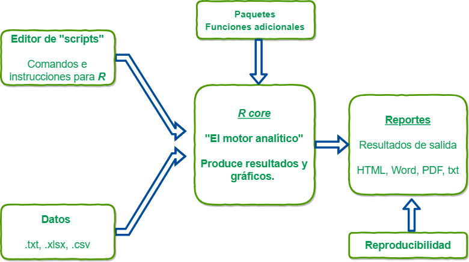
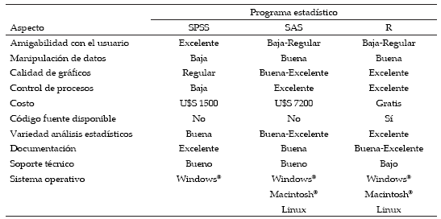
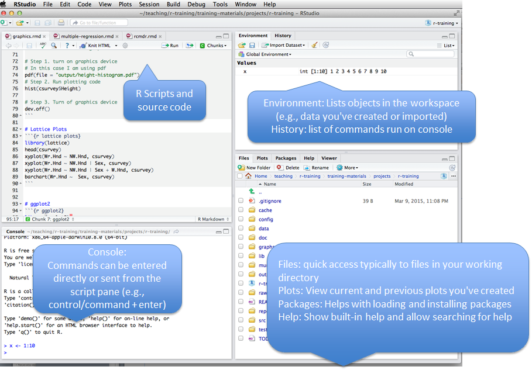
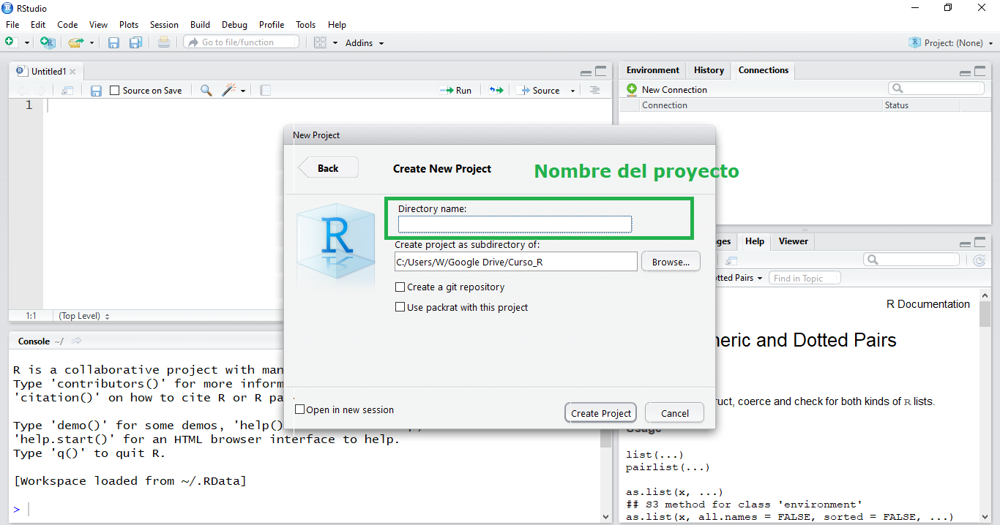
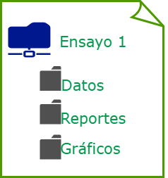

Análisis exploratorio de datos con R
Curso Análisis de datos experimentales con R
Carlos Neftaly Lozano A.
www.microbiostats.com
Hablemos de R
Hablemos de R

Hablemos de R

Hablemos de R

Instalación de R
Empezaremos por lo más básico, Podemos instalar R desde el siguiente link: https://www.r-project.org/
Pero como muchos somos algo despistados, estas son las maneras más sencillas para instalar R en distintos Sistemas Operativos:
| Sistema Operativo | Método |
|---|---|
| Windows | https://cran.r-project.org/bin/windows/base/old/3.4.2/R-3.4.2-win.exe |
| Debian y derivados | sudo apt-get install r-base |
| Redhat y derivados | sudo yum install R-core R-devel |
| Mac | https://www.youtube.com/watch?v=ICGkG7Gg6j0 |
Entornos de desarrollo para R
Una vez instalado, un entorno de desarrollo integrado será necesario para facilitar el desarrollo de códigos en R, por lo que se presentan tres de varias opciones para trabajar con R.
| IDE | Link |
|---|---|
| Tinn-R | https://sourceforge.net/projects/tinn-r/ |
| R-Studio [Recomendado] | https://www.rstudio.com/ |
| R commander (Rcmdr) | http://www.rcommander.com/ |

Rstudio

Flujo de trabajo sugerido en Rstudio

Flujo de trabajo sugerido en Rstudio

Flujo de trabajo sugerido en Rstudio

Flujo de trabajo sugerido en Rstudio

Flujo de trabajo sugerido en Rstudio

Empezemos.......

0. Estructura de datos

1. Importando datos a R
Tips: cosas que podrían producir problemas.
El separador decimal SIEMPRE SIEMPRE será un punto.
Nombres de columnas: no debe comenzar con números, tienen que ser sencillos y sin espacios ni caracteres especiales. Como sugerencia, los nombres de columnas deben ser cortos, ya que tendrás que escribirlos muchas veces.
R diferencia entre mayúscula y minúscula.
Rosa no es lo mismo que rosa.Si en una columna hay datos faltantes se debe dejar
espacio en blancoo remplazar conNA(con mayúsculas).
1. Importando datos a R
La forma más sencilla de importar un .csv es a través del comando read.csv(...), cuya implementación es la siguiente:
read.csv(file, header = TRUE, sep = ",", dec = ".", ...)
Dónde:
| Argumentos | Significado o uso |
|---|---|
file |
Ruta al archivo |
header |
Valor lógico para determinar si el archivo incluye encabezados en la primera linea. |
sep |
Este campo sirve para especificar el carácter de separación. |
dec |
El carácter usado para los puntos decimales |
... |
Ver la documentación para argumentos extras |
1. Importando datos a R
Un ejemplo sería el siguiente:
datos <- read.csv("dataframe1.csv",, header=T, sep=';', dec=',')